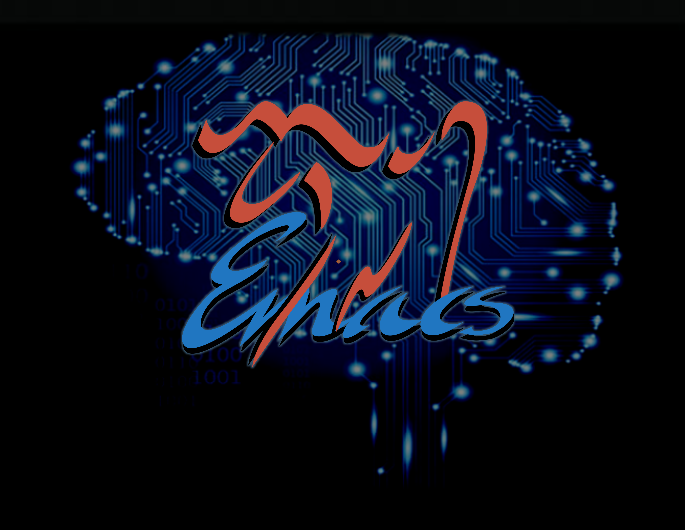

AI pair programming &
LLMs chats in Emacs

Marie-Hélène Burle
October 7, 2025
Warning
I normally don’t share my Emacs init code because it relies on many idiosyncratic setups that I have on my machine—key bindings in particular. Moreover, the packages READMEs give much better code snippets and are a much better place to start
But I keep being asked for it after each webinar. So here, I am sharing it
Don’t copy-paste it in your init file: it would break a lot of things. Instead, use it to inspire you for potential setups (or, better still, go to the packages READMEs instead)
You have been warned… 🙂
copilot.el
GitHub copilot code completion
My setup (see warning)
;; dependency
(straight-use-package 'editorconfig)
(use-package copilot
:straight (:host github
:repo "copilot-emacs/copilot.el"
:files ("dist" "*.el"))
:bind (("C-8" . copilot-complete)
:map copilot-completion-map
("C-j" . copilot-accept-completion)
("C-f" . copilot-accept-completion-by-word)
("C-t" . copilot-accept-completion-by-line)
("M-n" . copilot-next-completion)
("M-p" . copilot-previous-completion)))copilot-chat.el
GitHub copilot chat
My setup (see warning)
;; dependency
(straight-use-package 'magit)
(use-package copilot-chat
:straight (:host github:repo "chep/copilot-chat.el" :files ("*.el"))
:after (org markdown-mode)
:bind (("; C" . copilot-chat-display)
:map prog-mode-map ; ask Copilot to:
;; explain symbol under point
("; p e s" . copilot-chat-explain-symbol-at-line)
;; explain function under point
("; p e f" . copilot-chat-explain-defun)
;; explain selected code
("; p e c" . copilot-chat-explain)
;; review selected code
("; p r c" . copilot-chat-review)
;; review current buffer
("; p r b" . copilot-chat-review-whole-buffer)
;; document selected code
("; p d c" . copilot-chat-doc)
;; fix selected code
("; p f c" . copilot-chat-fix)
;; optimize selected code
("; p o c" . copilot-chat-optimize)
;; write tests for selected code
("; p t c" . copilot-chat-test)
;; apply a custom prompt to the function body under point
;; (instruct on how to refactor the function)
("; p c f" . copilot-chat-custom-prompt-function)
:map copilot-chat-org-prompt-mode-map
("C-<return>" . copilot-chat-prompt-send)
:map org-mode-map
("; p l" . copilot-chat-prompt-split-and-list)))gptel
Access any LLM from any buffer
My setup (see warning)
chatgpt-shell
A shell to access LLMs
My setup (see warning)
;; dependency
(use-package shell-maker
:straight (:type git :host github :repo "xenodium/shell-maker"))
(use-package chatgpt-shell
:straight (:type git
:host github \
:repo "xenodium/chatgpt-shell"
:files ("chatgpt-shell*.el"))
:custom
(setq chatgpt-shell-google-key
(lambda ()
(auth-source-pick-first-password
:host "generativelanguage.googleapis.com"))))aidermacs
aider in Emacs
Alternative: aider.el
My setup (see warning)